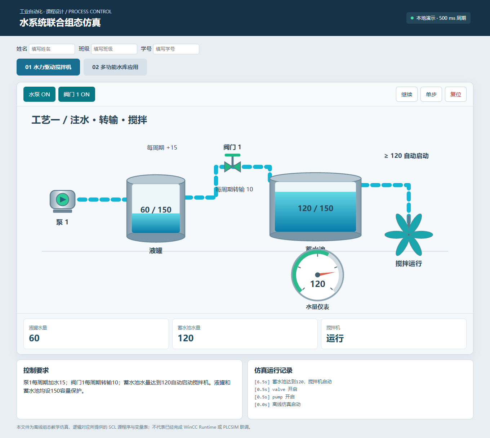

<!doctype html><html lang="zh-CN"><meta charset="utf-8">
<meta name="viewport" content="width=device-width,initial-scale=1">
<title>自动化仿真实验集</title><style>
body{margin:0;color:#213444;background:#edf4f8;font:17px/1.65 system-ui,sans-serif}
main{margin:4rem auto;padding:0 1.3rem;max-width:62rem}h1{font-size:clamp(2rem,6vw,3.6rem)}
a{color:#0b577c;text-underline-offset:.2em}img{display:block;margin:1.5rem 0;width:100%;border-radius:.7rem;border:1px solid #b1c6d3}
</style><main><h1>自动化仿真实验集</h1>
<p>在浏览器练习水池搅拌、液位控制和水库装车。仓库还收录 PLC、HMI 与 8051 实验源码。</p>
<a href="./plc/water/WaterSimulation.html">打开水系统仿真</a>　<a href="https://github.com/yangwei251003/automation-simulation-labs">查看源码与使用说明</a>

</main></html>
